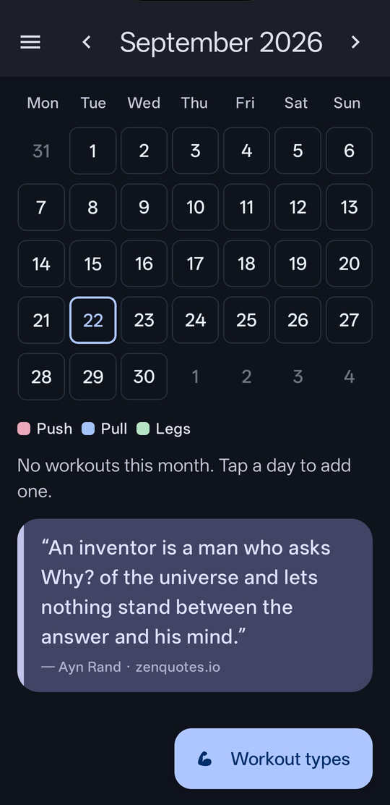
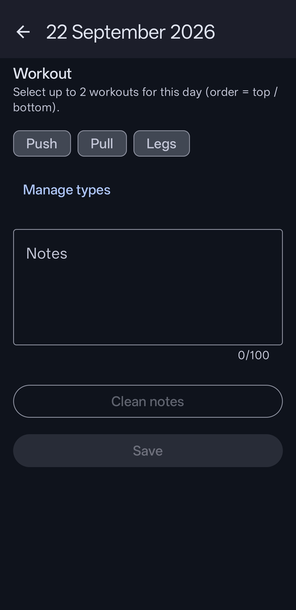
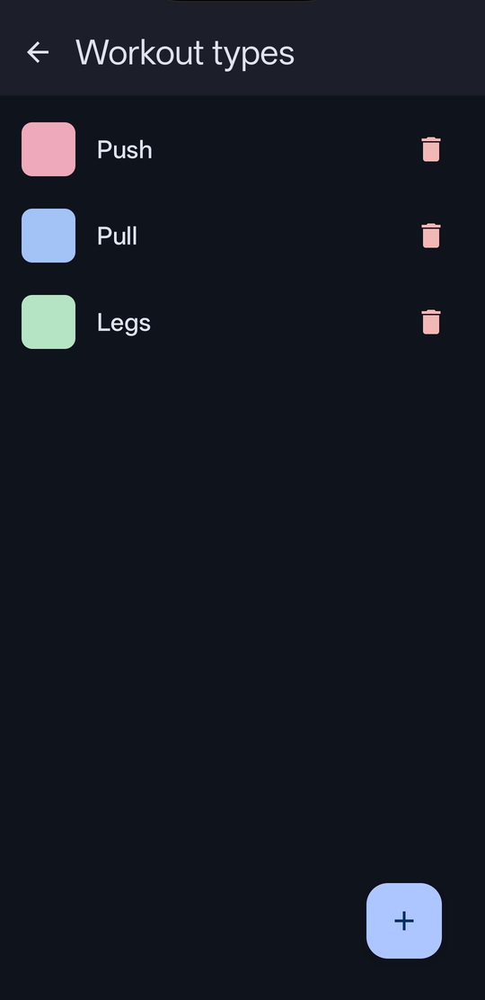
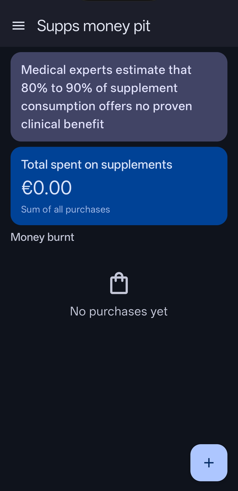

Liftloq keeps your workout plan on your device. Mark days on the calendar, manage workout types, and optionally track supplement spending — without signing in.
1. Mark a workout on the calendar
Open Calendar (home).
Tap a day.
Select up to two workout types (chips). You can also add optional notes.
Tap Save (top of the day screen). Nothing is stored until you save.
Back on the calendar, that day shows the type color(s).

Calendar: tap a day to open it. Use Workout types (bottom) to manage types.

Day screen: pick type(s) and notes, then tap Save.
2. Add and remove workout types
From Calendar, tap Workout types (bottom button). Or on a day screen, tap Manage types.
To add: tap +, enter a name, pick a color, then tap Save.
To remove: tap the trash icon on a type, then confirm Delete.

Workout types list: delete with trash, add with +.
3. Track supplements (Supps money pit)
Open the menu (☰) → Supps money pit.
Tap + to add a purchase (name, price, date), then tap Save.
Set currency under Settings (same menu).
See Total spent on supplements and the Money burnt list.

Supps money pit: tap + to add a purchase, then Save.
Tip: Swipe left on Calendar to cycle Calendar → Stats → Supps money pit (then back to Calendar). Settings stays in the menu only.